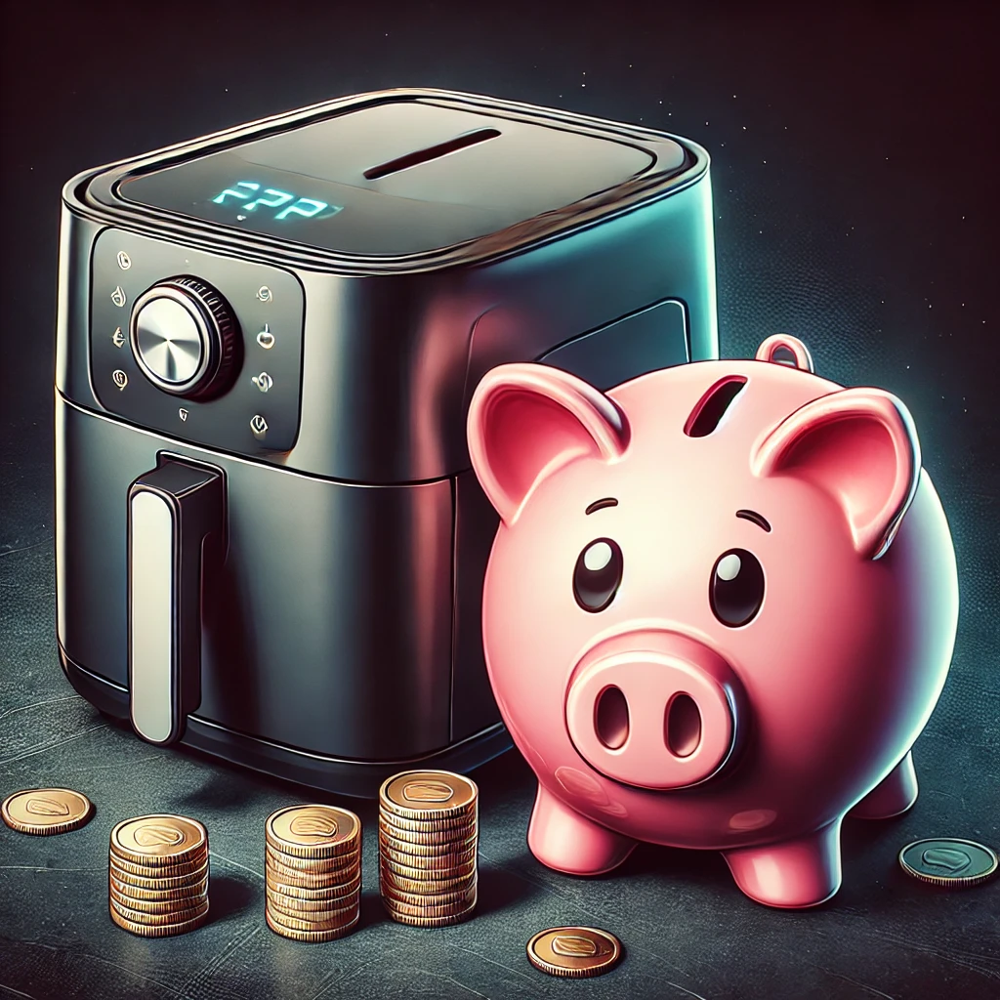

Best Air Fryer for Budget-Conscious Buyers
Air fryers have become a popular kitchen appliance, offering a healthier way to enjoy fried foods with less oil. If you're on a budget but still want to enjoy the benefits of air frying, there are plenty of affordable options that don’t compromise on quality. Here are some of the best air fryers for budget-conscious buyers.
1. Chefman TurboFry 2-Quart Air Fryer
Key Features:
- Compact Size: 2-quart capacity, perfect for small kitchens.
- Adjustable Temperature Control: Ranges from 200°F to 400°F.
- Dishwasher-Safe Basket: Easy to clean.
Why It's Great for Budget Buyers:
The Chefman TurboFry is a compact and affordable option that doesn't skimp on performance. It’s perfect for individuals or small families and fits easily in small kitchens.
2. Dash Compact Air Fryer 1.2-Quart
Key Features:
- Auto Shut-Off: Prevents overcooking.
- AirCrisp Technology: Reduces added fat by 70-80%.
- Cool Touch Housing: Safe to handle.
Why It's Great for Budget Buyers:
The Dash Compact Air Fryer is one of the most affordable options on the market. Its small size makes it ideal for single servings or small portions, and it’s very easy to use and clean.
3. GoWISE USA 3.7-Quart 8-in-1 Air Fryer
Key Features:
- 8 Cooking Presets: Fries, bakes, grills, and roasts with ease.
- 3.7-Quart Capacity: Suitable for small to medium-sized families.
- Touch Screen Display: Easy to use and program.
Why It's Great for Budget Buyers:
The GoWISE USA 3.7-Quart Air Fryer offers a great balance of price and features. With multiple presets and a decent capacity, it's a versatile option for budget-conscious buyers.
4. BLACK+DECKER Purify 2-Liter Air Fryer
Key Features:
- Dual Convection Fans: For fast and even cooking.
- 60-Minute Timer: With automatic shut-off.
- Variable Temperature Control: From 175°F to 400°F.
Why It's Great for Budget Buyers:
The BLACK+DECKER Purify Air Fryer is a reliable and affordable option that offers consistent cooking results. Its dual convection fans ensure even cooking, making it a great value for the price.
5. BELLA 2.6-Quart Air Convection Fryer
Key Features:
- High Performance Circular Heat Technology: Ensures quick and even cooking.
- Adjustable Temperature: Up to 400°F.
- Dishwasher-Safe Basket: Easy to clean.
Why It's Great for Budget Buyers:
The BELLA Air Convection Fryer is an affordable air fryer that delivers excellent performance. Its circular heat technology ensures even cooking, and the adjustable temperature control allows for versatile cooking options.
Conclusion
You don't have to spend a lot of money to enjoy the benefits of an air fryer. The models listed above offer great features and performance at an affordable price, making them perfect for budget-conscious buyers. Whether you're cooking for one or for a small family, these air fryers will help you prepare delicious and healthy meals without breaking the bank.